CM Servicios / Electricidad
Electricista Matriculado en Comodoro Rivadavia
CM Servicios Eléctricos brinda servicios de electricidad en Comodoro Rivadavia, Chubut: instalaciones, mantenimiento, mediciones, termografía y verificación de instalaciones con foco técnico, orden y seguridad.
El trabajo bien hecho.
La tranquilidad de estar protegido.
Servicios
Servicios de electricidad en Comodoro Rivadavia
Prestaciones técnicas para instalaciones eléctricas, mantenimiento, medición, verificación y documentación. Cada servicio se coordina de forma directa para evaluar el trabajo y preparar un presupuesto claro.
Servicios de mantenimiento eléctrico
Revisión, control y corrección de instalaciones para sostener operación segura.
Mediciones de resistencia de tierra
Control técnico de puesta a tierra con criterio de seguridad y trazabilidad.
Informes AEA 90364 / SRT 900/15
Documentación preparada para respaldar verificaciones e instalaciones.
Construcción e instalaciones APE
Ejecución de instalaciones con orden, prolijidad y enfoque profesional.
Prueba de interruptores diferenciales
Verificación de respuesta para protecciones diferenciales en instalaciones.
Cámara termográfica
Inspección visual térmica para detectar anomalías antes de una falla.
Mediciones de resistencia de aislación
Evaluación de aislación en circuitos y componentes eléctricos.
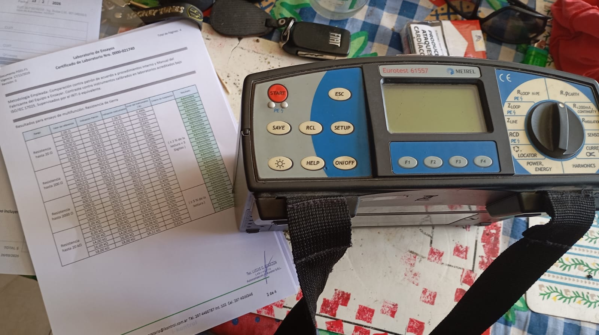
Precisión técnica
Instalaciones y reparaciones eléctricas con lectura clara
Verificamos la puesta a tierra, la aislación y la respuesta de los interruptores diferenciales. Registramos las mediciones y preparamos la documentación técnica de cada intervención.
Termografía
Termografía eléctrica
Permite detectar puntos calientes, conexiones deficientes y anomalías antes de que generen una falla.
Seguridad eléctrica
Seguridad antes que improvisación
Trabajamos con foco en mediciones, verificaciones, procedimientos, instrumentación y documentación.
Proceso
Una forma de trabajo ordenada
- 01Relevamiento
- 02Diagnóstico / medición
- 03Propuesta técnica
- 04Ejecución
- 05Verificación
- 06Informe / entrega
Nosotros
Electricista domiciliario y profesional
CM Servicios trabaja en Comodoro Rivadavia con foco en seguridad, precisión y calidad de ejecución. Cada intervención se aborda con responsabilidad técnica, orden, medición y atención directa.
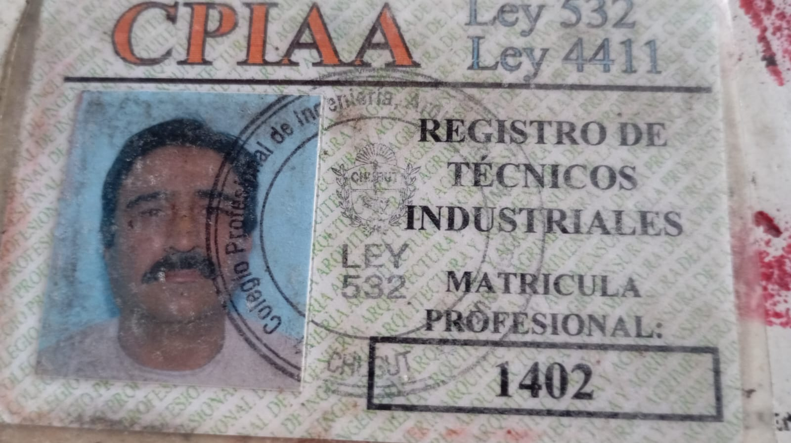
Trabajos
Trabajos realizados
Instalaciones, tableros y verificaciones eléctricas. Una mirada a nuestro trabajo en cada detalle.
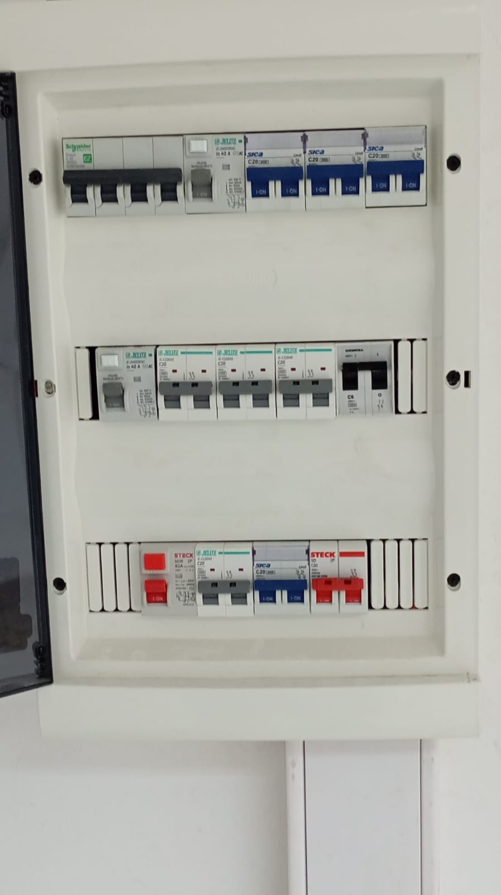
Tableros · 01Tablero de distribución eléctrica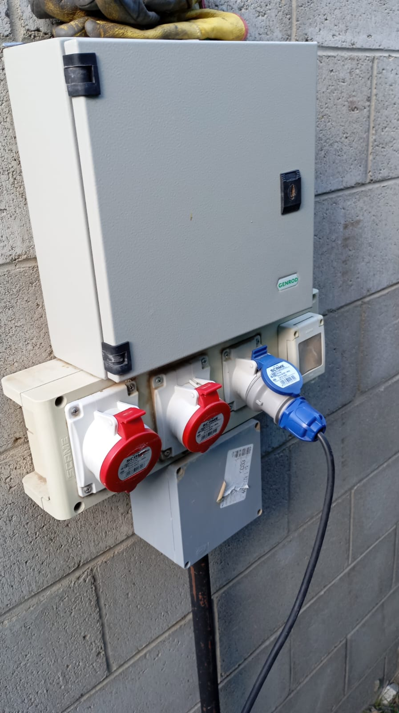
Tableros · 02Tablero con tomas industriales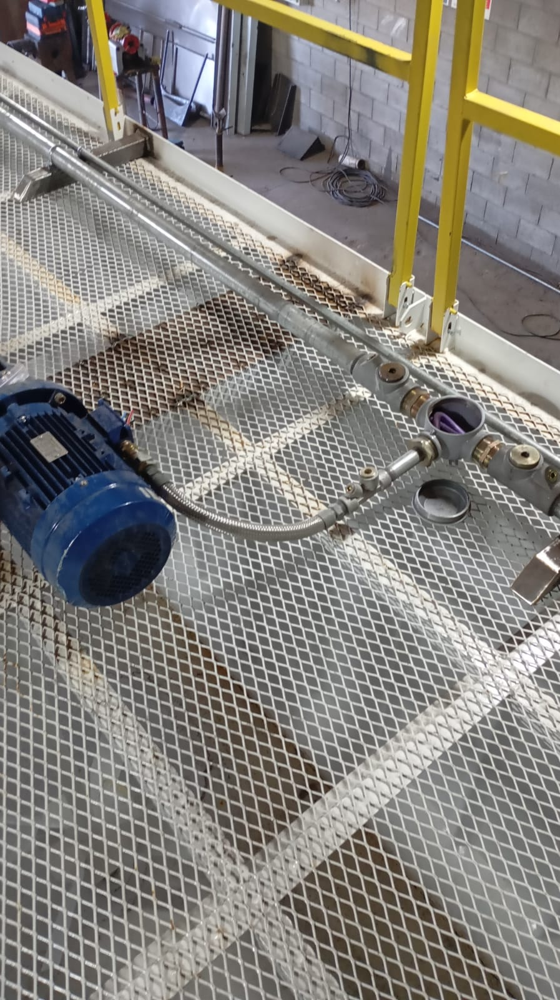
Instalaciones · 03Instalación en sector industrial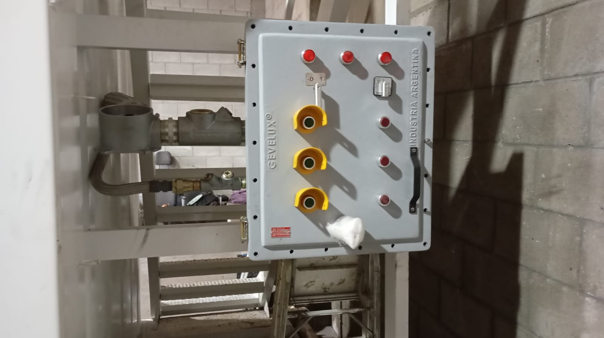
Tableros · 04Tablero de comando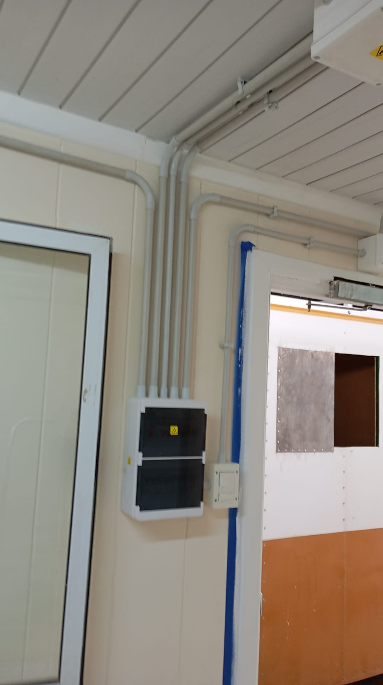
Instalaciones · 05Canalizaciones y tablero interior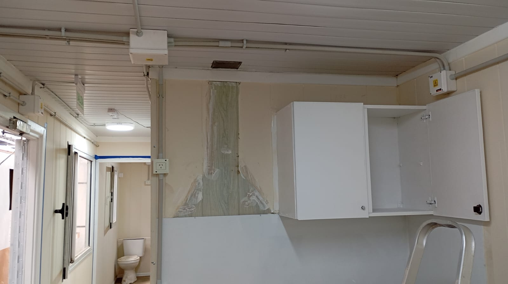
Instalaciones · 06Instalación eléctrica interior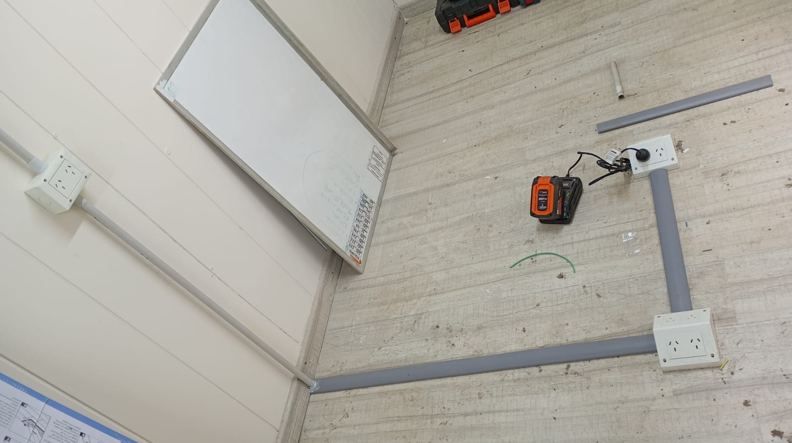
Instalaciones · 07Canalizaciones eléctricas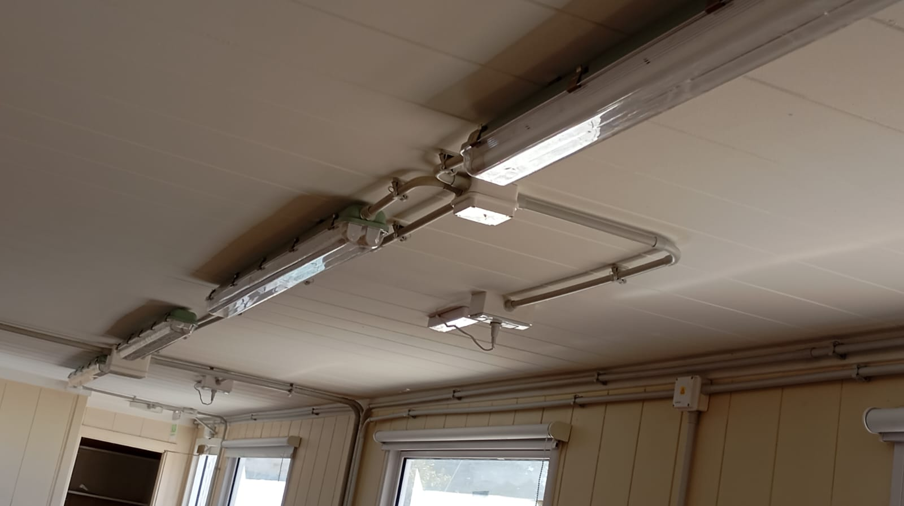
Instalaciones · 08Iluminación y tendido eléctrico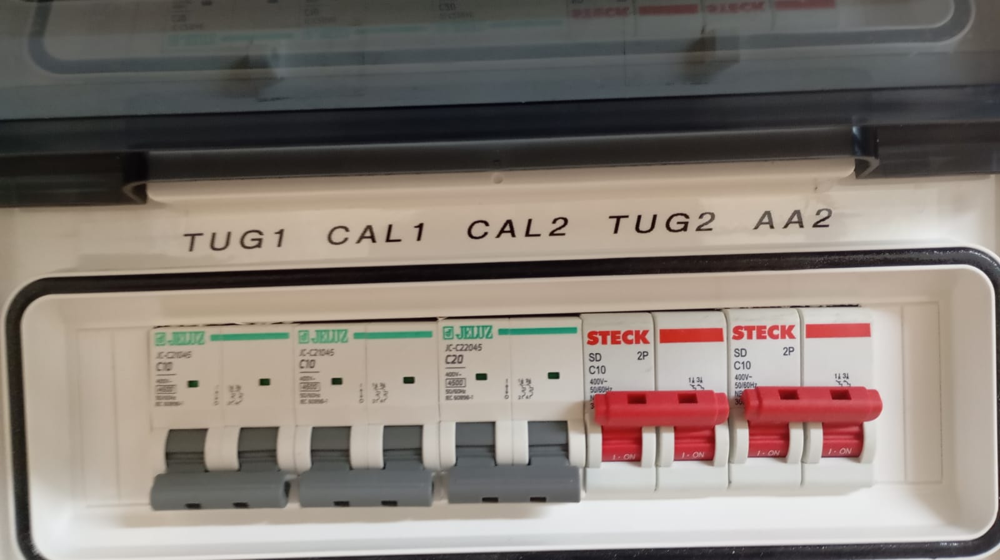
Tableros · 09Protecciones de circuitos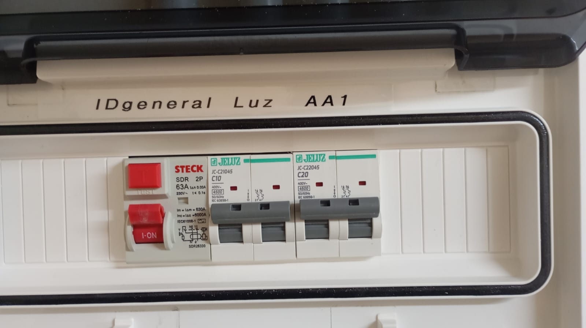
Tableros · 10Tablero de iluminación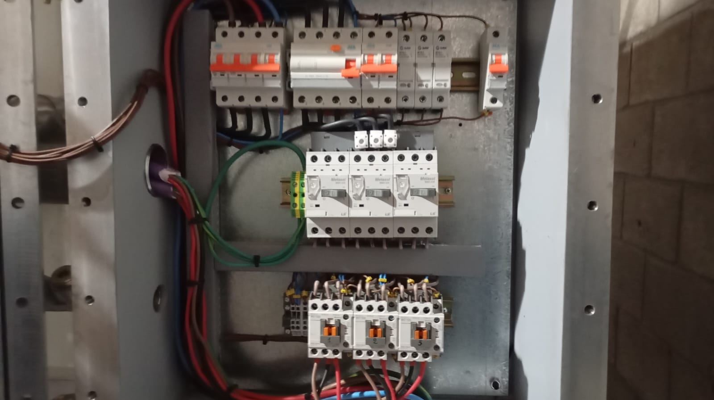
Tableros eléctricos Mediciones e instrumentaciónConsulta técnica
Solicitá tu presupuesto
Coordiná una visita, una medición o una revisión técnica de tu instalación eléctrica en Comodoro Rivadavia.
Preguntas frecuentes
Consultas habituales sobre servicios eléctricos
Respuestas simples para contratar un electricista matriculado, pedir una revisión técnica o solicitar un presupuesto en Comodoro Rivadavia.
¿Cómo contratar un electricista matriculado en Comodoro Rivadavia?
Podés comunicarte por WhatsApp, teléfono o el formulario del sitio. CM Servicios Eléctricos revisa la consulta, coordina el relevamiento y prepara una propuesta o presupuesto según el trabajo requerido.
¿Qué servicios eléctricos realizan?
Realizan mantenimiento eléctrico, mediciones de resistencia de tierra y aislación, informes AEA 90364 / SRT 900/15, construcción e instalaciones APE, prueba de interruptores diferenciales y termografía eléctrica.
¿Atienden instalaciones eléctricas domiciliarias y profesionales?
Sí. El sitio muestra trabajos de instalaciones, tableros, protecciones, mediciones y verificaciones técnicas para instalaciones que requieren seguridad, orden y documentación.
¿Cómo solicitar un presupuesto?
Ingresá a la sección de contacto, completá el formulario o escribí por WhatsApp al 2974083336 con tus datos y el servicio requerido.
Contacto